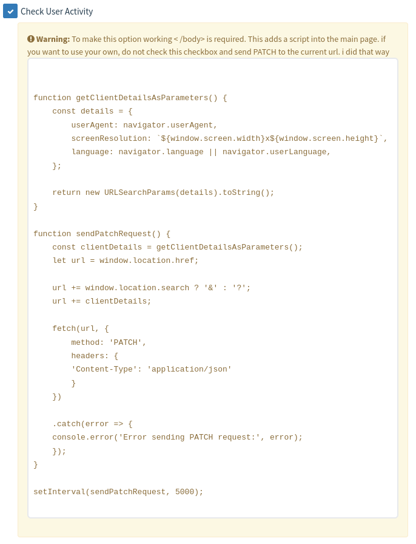
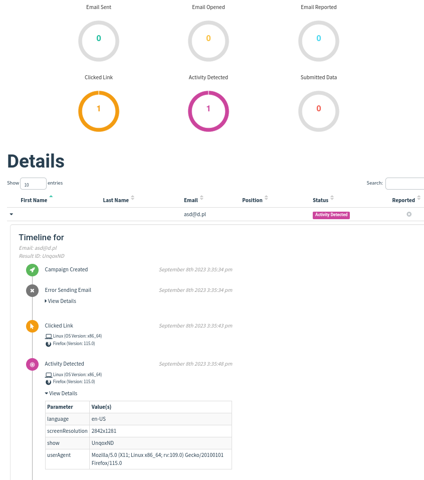
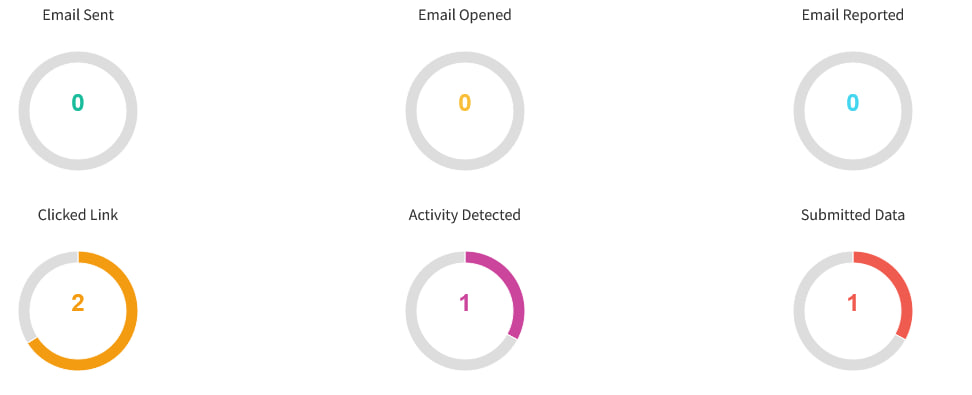

That's just staff to do in near feature
Statistic that is detecting if the link was opened in real browser - it could be useful when sandox arrives. It could be added with the landing page section.
So gophish has a system that is showing statistic in wrong way. Now every event is collected and displayed. F.e submitted data does not mean that link was clicked.
So gophish only returns basic data from the campaign. Now i am working to add ability to generate PDF overview report and advanced XLSX report.
So to be done with the statistic stuff - I need to fix also the email opened tracker. Image tracker is almost every time removed from the emails
Ability to receive a session from the successful phish is powerful.
Smishing is fun and attractive.
This new feature 'recognizes' valid users (well it tries):
A new statistic titled "Activity Detected" has been introduced for cases when many sandboxes don't even access the page through a browser - perfect for phishing campaigns that has a lot of undefined security mechanisms.
Well, i think, the best to describe it, is to show how it works.
Every event is now collected separately. In this case, there was 3 users. User 1 clicked a link - resulting the activity detected statistic and clicked link, second user didn't enter the link but it was opened using GET request, without user activity and third one just submitted data using post request, so there was no user activity. Take look on the email and email opened, no emails was sent so statistics are 0.
Conclusions: